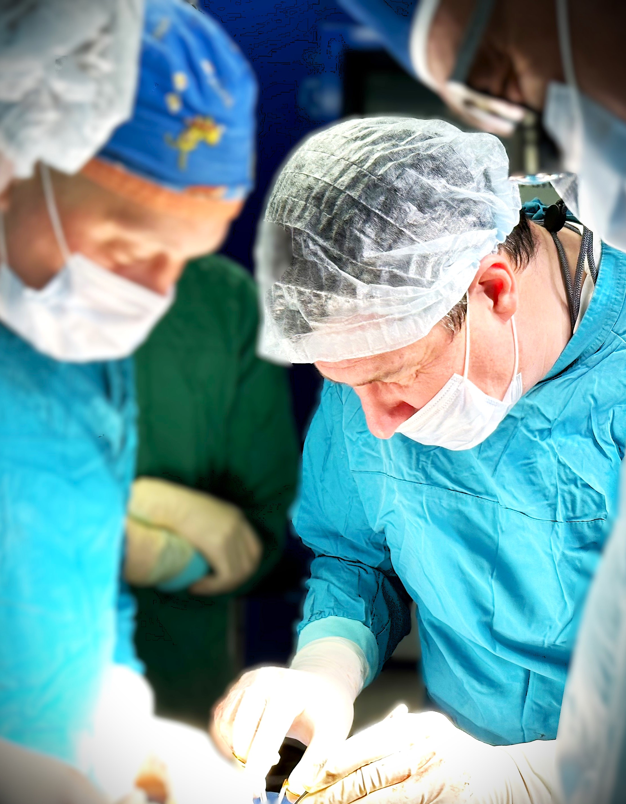
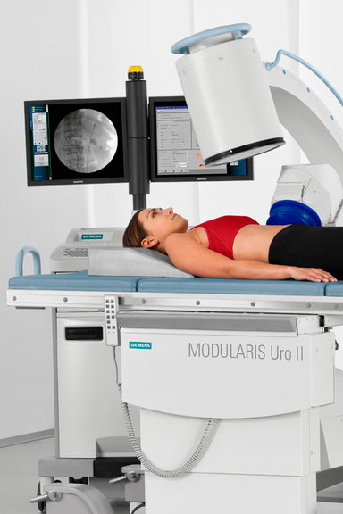
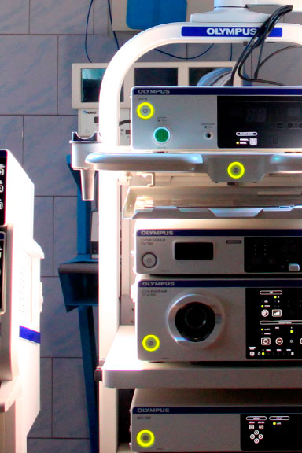
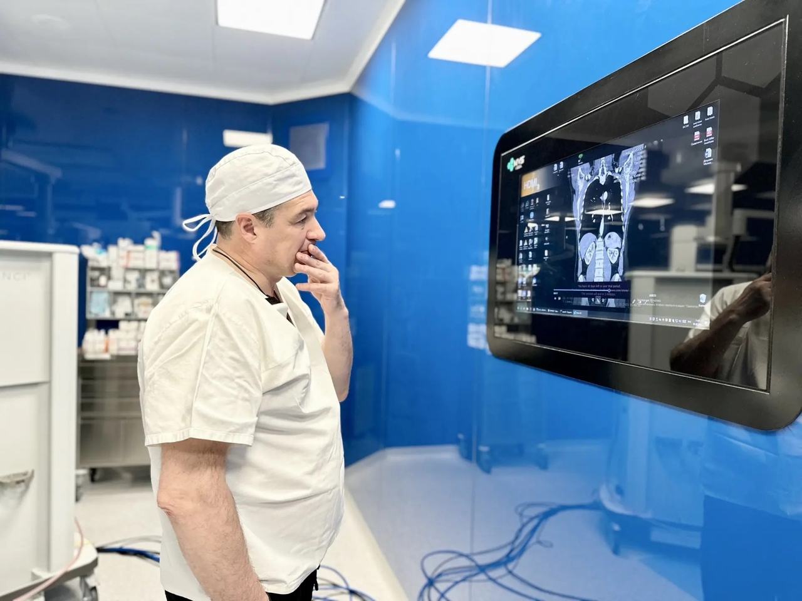

ГАЛЕРЕЯ
Работа и достижения






Главный врач · Руководитель центра · Доктор медицинских наук, профессор
Попов Сергей Валерьевич — выдающийся специалист в области эндоскопической урологии, доктор медицинских наук, профессор. Руководит Городским центром эндоскопической урологии и новых технологий, обеспечивая высочайший уровень медицинской помощи пациентам с урологическими заболеваниями.
Автор более 150 научных публикаций в ведущих российских и международных журналах. Руководитель исследовательских проектов в области малоинвазивной хирургии, лазерных технологий в урологии и роботизированной хирургии. Член редакционных коллегий нескольких профильных научных журналов.
Специализируется на эндоскопических и лапароскопических операциях при заболеваниях предстательной железы, почек и мочеточников. Выполняет сложнейшие операции по удалению опухолей почек с сохранением органа, роботизированные операции на мочевыделительной системе.



Сергей Валерьевич Попов лично рассматривает сложные и запущенные клинические случаи. Для записи на личную консультацию обратитесь в приемную.
Вторник и четверг
14:00 — 16:00
КБ "Святителя Луки"
Административный корпус
Санкт-Петербург, ул. Чугунная, д. 46
Запишитесь на онлайн-консультацию с Поповым Сергеем Валерьевичем. Врач проведёт разбор вашей ситуации, даст рекомендации по диагностике и лечению, ответит на все вопросы.
Научный руководитель Центра
Доктор медицинских наук, профессор. Руководит научными исследованиями и разработками центра.
Зам. главного врача по науке
Кандидат медицинских наук. Координирует научную деятельность и клинические испытания.
Зав. отделением урологии №1
Руководит операционной деятельностью отделения эндоурологии.
Зав. отделением урологии №2
Врач-уролог, онколог, к.м.н. Специалист в онкоурологии и роботизированной хирургии.
Врач-уролог, андролог
Специалист по репродуктивной урологии и мужскому здоровью.
Врач-терапевт, эндокринолог
Комплексная подготовка пациентов и сопровождение терапии.